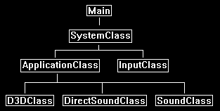

This tutorial will cover the basics of using Direct Sound in DirectX 11 as well as how to load and play .wav audio files.
This tutorial is based on the code in the previous DirectX 11 tutorials.
I will cover a couple basics about Direct Sound in DirectX 11 as well as a bit about sound formats before we start the code part of the tutorial.
The first thing you will notice is that the Direct Sound API is still the same one from DirectX 8.
The only major difference is that hardware sound mixing is generally not available on the latest Windows operating systems.
The reason being is for security and operating system consistency all hardware calls now have to go through a security layer.
The older sound cards used to have DMA (direct memory access) which was very fast but doesn't work with the newer Windows security models.
So, all sound mixing is now done at the software level and hence no hardware acceleration is directly available to this API.
The nice thing about Direct Sound is that you can play any audio format you want.
In this tutorial I cover the .wav audio format but you can replace the .wav code with .mp3 or anything you prefer.
You can even use your own audio format if you have created one.
Direct Sound is easy to use.
You just create a sound buffer with the play back format you would like.
And then copy your audio format into the buffer's format, and now it is ready to play.
Note that Direct Sound does use two different kinds of buffers which are primary and secondary buffers.
The primary buffer is the main sound memory buffer on your default sound card, USB headset, and so forth.
Secondary buffers are buffers you create in memory and load your sounds into.
When you play a secondary buffer the Direct Sound API takes care of mixing that sound into the primary buffer which then plays the sound.
If you play multiple secondary buffers at the same time, it will mix them together and play them in the primary buffer.
Also note that all buffers are circular so you can set them to repeat indefinitely.
Framework
To start the tutorial, we will first look at the simplified framework.
The new classes are the DirectSoundClass and the SoundClass.
These contain all the DirectSound and .wav format functionality.
I have removed the other classes since they aren't needed for this tutorial.

Directsoundclass.h
The DirectSoundClass encapsulates the basic DirectSound functionality.
///////////////////////////////////////////////////////////////////////////////
// Filename: directsoundclass.h
///////////////////////////////////////////////////////////////////////////////
#ifndef _DIRECTSOUNDCLASS_H_
#define _DIRECTSOUNDCLASS_H_
/////////////
// LINKING //
/////////////
The following libraries and headers are required for DirectSound to compile properly.
#pragma comment(lib, "dsound.lib")
#pragma comment(lib, "dxguid.lib")
#pragma comment(lib, "winmm.lib")
//////////////
// INCLUDES //
//////////////
#include <windows.h>
#include <mmsystem.h>
#include <dsound.h>
#include <stdio.h>
///////////////////////////////////////////////////////////////////////////////
// Class name: DirectSoundClass
///////////////////////////////////////////////////////////////////////////////
class DirectSoundClass
{
public:
DirectSoundClass();
DirectSoundClass(const DirectSoundClass&);
~DirectSoundClass();
bool Initialize(HWND);
void Shutdown();
IDirectSound8* GetDirectSound();
private:
IDirectSound8* m_DirectSound;
IDirectSoundBuffer* m_primaryBuffer;
IDirectSound3DListener8* m_listener;
};
#endif
Directsoundclass.cpp
///////////////////////////////////////////////////////////////////////////////
// Filename: directsoundclass.cpp
///////////////////////////////////////////////////////////////////////////////
#include "directsoundclass.h"
DirectSoundClass::DirectSoundClass()
{
m_DirectSound = 0;
m_primaryBuffer = 0;
m_listener = 0;
}
DirectSoundClass::DirectSoundClass(const DirectSoundClass& other)
{
}
DirectSoundClass::~DirectSoundClass()
{
}
bool DirectSoundClass::Initialize(HWND hwnd)
{
HRESULT result;
DSBUFFERDESC bufferDesc;
WAVEFORMATEX waveFormat;
The Initialize function handles getting an interface pointer to DirectSound and the default primary sound buffer.
Note that you can query the system for all the sound devices and then grab the pointer to the primary sound buffer for a specific device.
However, I've kept this tutorial simple and just grabbed the pointer to the primary buffer of the default sound device.
// Initialize the direct sound interface pointer for the default sound device.
result = DirectSoundCreate8(NULL, &m_DirectSound, NULL);
if(FAILED(result))
{
return false;
}
// Set the cooperative level to priority so the format of the primary sound buffer can be modified.
result = m_DirectSound->SetCooperativeLevel(hwnd, DSSCL_PRIORITY);
if(FAILED(result))
{
return false;
}
We have to setup the description of how we want to access the primary buffer.
The dwFlags are the important part of this structure.
In this case we just want to setup a primary buffer description with the capability of adjusting its volume and is also capable of playing 3D sound.
There are other capabilities you can grab but we are keeping it simple for now.
// Setup the primary buffer description.
bufferDesc.dwSize = sizeof(DSBUFFERDESC);
bufferDesc.dwFlags = DSBCAPS_PRIMARYBUFFER | DSBCAPS_CTRLVOLUME | DSBCAPS_CTRL3D;
bufferDesc.dwBufferBytes = 0;
bufferDesc.dwReserved = 0;
bufferDesc.lpwfxFormat = NULL;
bufferDesc.guid3DAlgorithm = GUID_NULL;
// Get control of the primary sound buffer on the default sound device.
result = m_DirectSound->CreateSoundBuffer(&bufferDesc, &m_primaryBuffer, NULL);
if(FAILED(result))
{
return false;
}
Now that we have control of the primary buffer on the default sound device we want to change its format to our desired audio file format.
Here I have decided we want high quality sound so we will set it to uncompressed CD audio quality.
// Setup the format of the primary sound bufffer, in this case it is a .WAV file recorded at 44,100 samples per second in 16-bit stereo (cd audio format).
waveFormat.wFormatTag = WAVE_FORMAT_PCM;
waveFormat.nSamplesPerSec = 44100;
waveFormat.wBitsPerSample = 16;
waveFormat.nChannels = 2;
waveFormat.nBlockAlign = (waveFormat.wBitsPerSample / 8) * waveFormat.nChannels;
waveFormat.nAvgBytesPerSec = waveFormat.nSamplesPerSec * waveFormat.nBlockAlign;
waveFormat.cbSize = 0;
// Set the primary buffer to be the wave format specified.
result = m_primaryBuffer->SetFormat(&waveFormat);
if(FAILED(result))
{
return false;
}
In the next tutorial we will cover 3D sound.
And to support 3D sound we will need to setup a listener interface to represent where in the 3D world the person will be listening from.
// Obtain a listener interface.
result = m_primaryBuffer->QueryInterface(IID_IDirectSound3DListener8, (LPVOID*)&m_listener);
if(FAILED(result))
{
return false;
}
// Set the initial position of the 3D listener to be in the middle of the scene.
m_listener->SetPosition(0.0f, 0.0f, 0.0f, DS3D_IMMEDIATE);
return true;
}
The ShutdownDirectSound function handles releasing the primary buffer and DirectSound interfaces.
void DirectSoundClass::Shutdown()
{
// Release the listener interface.
if(m_listener)
{
m_listener->Release();
m_listener = 0;
}
// Release the primary sound buffer pointer.
if(m_primaryBuffer)
{
m_primaryBuffer->Release();
m_primaryBuffer = 0;
}
// Release the direct sound interface pointer.
if(m_DirectSound)
{
m_DirectSound->Release();
m_DirectSound = 0;
}
return;
}
The GetDirectSound function allows us access to the Direct Sound interface similar to how we have been using the D3D->GetDevice().
IDirectSound8* DirectSoundClass::GetDirectSound()
{
return m_DirectSound;
}
Soundclass.h
The SoundClass encapsulates the .wav audio loading and playing capabilities.
////////////////////////////////////////////////////////////////////////////////
// Filename: soundclass.h
////////////////////////////////////////////////////////////////////////////////
#ifndef _SOUNDCLASS_H_
#define _SOUNDCLASS_H_
///////////////////////
// MY CLASS INCLUDES //
///////////////////////
#include "directsoundclass.h"
////////////////////////////////////////////////////////////////////////////////
// Class name: SoundClass
////////////////////////////////////////////////////////////////////////////////
class SoundClass
{
private:
The structs used here are for the .wav file format.
If you are using a different format you will want to replace these structs with the ones required for your audio format.
struct RiffWaveHeaderType
{
char chunkId[4];
unsigned long chunkSize;
char format[4];
};
struct SubChunkHeaderType
{
char subChunkId[4];
unsigned long subChunkSize;
};
struct FmtType
{
unsigned short audioFormat;
unsigned short numChannels;
unsigned long sampleRate;
unsigned long bytesPerSecond;
unsigned short blockAlign;
unsigned short bitsPerSample;
};
public:
SoundClass();
SoundClass(const SoundClass&);
~SoundClass();
The LoadTrack function will load in the .wav audio file. ReleaseTrack will release the .wav file.
PlayTrack and StopTrack will be used for starting and stopping the .wav file playing.
bool LoadTrack(IDirectSound8*, char*, long);
void ReleaseTrack();
bool PlayTrack();
bool StopTrack();
private:
LoadStereoWaveFile is used for specifically loading the .wav format.
If you have other formats you want to support you just add additional load functions for them here.
bool LoadStereoWaveFile(IDirectSound8*, char*, long);
void ReleaseWaveFile();
private:
The secondary buffer is where we store the loaded audio sound or track.
IDirectSoundBuffer8* m_secondaryBuffer;
};
#endif
Soundclass.cpp
///////////////////////////////////////////////////////////////////////////////
// Filename: soundclass.cpp
///////////////////////////////////////////////////////////////////////////////
#include "soundclass.h"
SoundClass::SoundClass()
{
m_secondaryBuffer = 0;
}
SoundClass::SoundClass(const SoundClass& other)
{
}
SoundClass::~SoundClass()
{
}
The LoadTrack function will call the LoadStereoWaveFile to load in our .wav file to the secondary buffer so it can be played.
bool SoundClass::LoadTrack(IDirectSound8* DirectSound, char* filename, long volume)
{
bool result;
// Load the wave file for the sound.
result = LoadStereoWaveFile(DirectSound, filename, volume);
if(!result)
{
return false;
}
return true;
}
The ReleaseTrack function will release the loaded audio buffer data.
void SoundClass::ReleaseTrack()
{
// Release the wave file buffers.
ReleaseWaveFile();
return;
}
The PlayWaveFile function will play the audio file stored in the secondary buffer.
The moment you use the Play function it will automatically mix the audio into the primary buffer and start it playing if it wasn't already.
Also note that we set the position to start playing at the beginning of the secondary sound buffer otherwise it will continue from where it last stopped playing.
bool SoundClass::PlayTrack()
{
HRESULT result;
// Set position at the beginning of the sound buffer.
result = m_secondaryBuffer->SetCurrentPosition(0);
if(FAILED(result))
{
return false;
}
// If looping is on then play the contents of the secondary sound buffer in a loop, otherwise just play it once.
result = m_secondaryBuffer->Play(0, 0, 0);
if(FAILED(result))
{
return false;
}
return true;
}
The StopTrack function will stop the secondary buffer from playing the sound.
bool SoundClass::StopTrack()
{
HRESULT result;
// Stop the sound from playing.
result = m_secondaryBuffer->Stop();
if(FAILED(result))
{
return false;
}
return true;
}
The LoadWaveFile function is what handles loading in a .wav audio file and then copies the data onto a new secondary buffer.
If you are looking to do different formats you would replace this function or write a similar one.
bool SoundClass::LoadStereoWaveFile(IDirectSound8* DirectSound, char* filename, long volume)
{
FILE* filePtr;
RiffWaveHeaderType riffWaveFileHeader;
SubChunkHeaderType subChunkHeader;
FmtType fmtData;
WAVEFORMATEX waveFormat;
DSBUFFERDESC bufferDesc;
HRESULT result;
IDirectSoundBuffer* tempBuffer;
unsigned char *waveData, *bufferPtr;
unsigned long long count;
unsigned long dataSize, bufferSize;
long seekSize;
int error;
bool foundFormat, foundData;
To start first open the .wav file and read in the header of the file.
The header will contain all the information about the audio file so we can use that to create a secondary buffer to accommodate the audio data.
The audio file header also tells us where the data begins and how big it is.
You will notice I check for all the needed tags to ensure the audio file is not corrupt and is the proper wave file format containing RIFF and WAVE tags.
I also do a couple other checks to ensure it is a 44.1KHz stereo 16bit audio file.
If it is mono, 22.1 KHZ, 8bit, or anything else then it will fail ensuring we are only loading the exact format we want.
// Open the wave file for reading in binary.
error = fopen_s(&filePtr, filename, "rb");
if(error != 0)
{
return false;
}
// Read in the riff wave file header.
count = fread(&riffWaveFileHeader, sizeof(riffWaveFileHeader), 1, filePtr);
if(count != 1)
{
return false;
}
// Check that the chunk ID is the RIFF format.
if((riffWaveFileHeader.chunkId[0] != 'R') || (riffWaveFileHeader.chunkId[1] != 'I') || (riffWaveFileHeader.chunkId[2] != 'F') || (riffWaveFileHeader.chunkId[3] != 'F'))
{
return false;
}
// Check that the file format is the WAVE format.
if((riffWaveFileHeader.format[0] != 'W') || (riffWaveFileHeader.format[1] != 'A') || (riffWaveFileHeader.format[2] != 'V') || (riffWaveFileHeader.format[3] != 'E'))
{
return false;
}
Now .wav files are made up of sub chunks, and the first sub chunk we need to find in the file is the fmt sub chunk.
So, we parse through the file until it is found.
// Read in the sub chunk headers until you find the format chunk.
foundFormat = false;
while(foundFormat == false)
{
// Read in the sub chunk header.
count = fread(&subChunkHeader, sizeof(subChunkHeader), 1, filePtr);
if(count != 1)
{
return false;
}
// Determine if it is the fmt header. If not then move to the end of the chunk and read in the next one.
if((subChunkHeader.subChunkId[0] == 'f') && (subChunkHeader.subChunkId[1] == 'm') && (subChunkHeader.subChunkId[2] == 't') && (subChunkHeader.subChunkId[3] == ' '))
{
foundFormat = true;
}
else
{
fseek(filePtr, subChunkHeader.subChunkSize, SEEK_CUR);
}
}
Once we have found the fmt sub chunk we can now verify that the format of the file is correct.
// Read in the format data.
count = fread(&fmtData, sizeof(fmtData), 1, filePtr);
if(count != 1)
{
return false;
}
// Check that the audio format is WAVE_FORMAT_PCM.
if(fmtData.audioFormat != WAVE_FORMAT_PCM)
{
return false;
}
// Check that the wave file was recorded in stereo format.
if(fmtData.numChannels != 2)
{
return false;
}
// Check that the wave file was recorded at a sample rate of 44.1 KHz.
if(fmtData.sampleRate != 44100)
{
return false;
}
// Ensure that the wave file was recorded in 16 bit format.
if(fmtData.bitsPerSample != 16)
{
return false;
}
Now that we are done with the fmt sub chunk we need to find the actual data sub chunk.
// Seek up to the next sub chunk.
seekSize = subChunkHeader.subChunkSize - 16;
fseek(filePtr, seekSize, SEEK_CUR);
// Read in the sub chunk headers until you find the data chunk.
foundData = false;
while(foundData == false)
{
// Read in the sub chunk header.
count = fread(&subChunkHeader, sizeof(subChunkHeader), 1, filePtr);
if(count != 1)
{
return false;
}
// Determine if it is the data header. If not then move to the end of the chunk and read in the next one.
if((subChunkHeader.subChunkId[0] == 'd') && (subChunkHeader.subChunkId[1] == 'a') && (subChunkHeader.subChunkId[2] == 't') && (subChunkHeader.subChunkId[3] == 'a'))
{
foundData = true;
}
else
{
fseek(filePtr, subChunkHeader.subChunkSize, SEEK_CUR);
}
}
// Store the size of the data chunk.
dataSize = subChunkHeader.subChunkSize;
Now that we have found the data sub chunk, we can setup the secondary buffer that we will load the audio data onto.
We have to first set the wave format and buffer description of the secondary buffer similar to how we did for the primary buffer.
There are some changes though since this is secondary and not primary in terms of the dwFlags and dwBufferBytes.
// Set the wave format of secondary buffer that this wave file will be loaded onto.
waveFormat.wFormatTag = WAVE_FORMAT_PCM;
waveFormat.nSamplesPerSec = fmtData.sampleRate;
waveFormat.wBitsPerSample = fmtData.bitsPerSample;
waveFormat.nChannels = fmtData.numChannels;
waveFormat.nBlockAlign = (waveFormat.wBitsPerSample / 8) * waveFormat.nChannels;
waveFormat.nAvgBytesPerSec = waveFormat.nSamplesPerSec * waveFormat.nBlockAlign;
waveFormat.cbSize = 0;
// Set the buffer description of the secondary sound buffer that the wave file will be loaded onto.
bufferDesc.dwSize = sizeof(DSBUFFERDESC);
bufferDesc.dwBufferBytes = dataSize;
bufferDesc.dwReserved = 0;
bufferDesc.lpwfxFormat = &waveFormat;
bufferDesc.guid3DAlgorithm = GUID_NULL;
bufferDesc.dwFlags = DSBCAPS_CTRLVOLUME; // Stereo track.
Now the way to create a secondary buffer is fairly strange.
The first step is that you create a temporary IDirectSoundBuffer with the sound buffer description you setup for the secondary buffer.
If this succeeds then you can use that temporary buffer to create a IDirectSoundBuffer8 secondary buffer by calling QueryInterface with the IID_IDirectSoundBuffer8 parameter.
If this succeeds then you can release the temporary buffer and the secondary buffer is ready for use.
// Create a temporary sound buffer with the specific buffer settings.
result = DirectSound->CreateSoundBuffer(&bufferDesc, &tempBuffer, NULL);
if(FAILED(result))
{
return false;
}
// Test the buffer format against the direct sound 8 interface and create the secondary buffer.
result = tempBuffer->QueryInterface(IID_IDirectSoundBuffer8, (void**)&m_secondaryBuffer);
if(FAILED(result))
{
return false;
}
// Release the temporary buffer.
tempBuffer->Release();
tempBuffer = 0;
Now that the secondary buffer is ready, we can load in the wave data from the audio file.
First, I load it into a memory buffer so I can check and modify the data if I need to.
Once the data is in memory you then lock the secondary buffer, copy the data to it using a memcpy, and then unlock it.
This secondary buffer is now ready for use.
Note that locking the secondary buffer can actually take in two pointers and two positions to write to.
This is because it is a circular buffer and if you start by writing to the middle of it you will need the size of the buffer from that point so that you don't write outside the bounds of it.
This is useful for streaming audio and such.
In this tutorial we create a buffer that is the same size as the audio file and write from the beginning to make things simple.
// Create a temporary buffer to hold the wave file data.
waveData = new unsigned char[dataSize];
// Read in the wave file data into the newly created buffer.
count = fread(waveData, 1, dataSize, filePtr);
if(count != dataSize)
{
return false;
}
// Close the file once done reading.
error = fclose(filePtr);
if(error != 0)
{
return false;
}
// Lock the secondary buffer to write wave data into it.
result = m_secondaryBuffer->Lock(0, dataSize, (void**)&bufferPtr, (DWORD*)&bufferSize, NULL, 0, 0);
if(FAILED(result))
{
return false;
}
// Copy the wave data into the buffer.
memcpy(bufferPtr, waveData, dataSize);
// Unlock the secondary buffer after the data has been written to it.
result = m_secondaryBuffer->Unlock((void*)bufferPtr, bufferSize, NULL, 0);
if(FAILED(result))
{
return false;
}
// Release the wave data since it was copied into the secondary buffer.
delete [] waveData;
waveData = 0;
// Set volume of the buffer.
result = m_secondaryBuffer->SetVolume(volume);
if(FAILED(result))
{
return false;
}
return true;
}
ReleaseWaveFile just does a release of the secondary buffer.
void SoundClass::ReleaseWaveFile()
{
// Release the secondary sound buffer.
if(m_secondaryBuffer)
{
m_secondaryBuffer->Release();
m_secondaryBuffer = 0;
}
return;
}
Applicationclass.h
////////////////////////////////////////////////////////////////////////////////
// Filename: applicationclass.h
////////////////////////////////////////////////////////////////////////////////
#ifndef _APPLICATIONCLASS_H_
#define _APPLICATIONCLASS_H_
/////////////
// GLOBALS //
/////////////
const bool FULL_SCREEN = false;
const bool VSYNC_ENABLED = true;
const float SCREEN_NEAR = 0.3f;
const float SCREEN_DEPTH = 1000.0f;
///////////////////////
// MY CLASS INCLUDES //
///////////////////////
#include "d3dclass.h"
#include "inputclass.h"
Include the two new sound header files.
#include "directsoundclass.h"
#include "soundclass.h"
////////////////////////////////////////////////////////////////////////////////
// Class name: ApplicationClass
////////////////////////////////////////////////////////////////////////////////
class ApplicationClass
{
public:
ApplicationClass();
ApplicationClass(const ApplicationClass&);
~ApplicationClass();
bool Initialize(int, int, HWND);
void Shutdown();
bool Frame(InputClass*);
private:
bool Render();
private:
D3DClass* m_Direct3D;
Define the DirectSound object and the test sound object.
DirectSoundClass* m_DirectSound;
SoundClass* m_TestSound1;
};
#endif
Applicationclass.cpp
////////////////////////////////////////////////////////////////////////////////
// Filename: applicationclass.cpp
////////////////////////////////////////////////////////////////////////////////
#include "applicationclass.h"
ApplicationClass::ApplicationClass()
{
m_Direct3D = 0;
m_DirectSound = 0;
m_TestSound1 = 0;
}
ApplicationClass::ApplicationClass(const ApplicationClass& other)
{
}
ApplicationClass::~ApplicationClass()
{
}
bool ApplicationClass::Initialize(int screenWidth, int screenHeight, HWND hwnd)
{
char soundFilename[128];
bool result;
// Create and initialize the Direct3D object.
m_Direct3D = new D3DClass;
result = m_Direct3D->Initialize(screenWidth, screenHeight, VSYNC_ENABLED, hwnd, FULL_SCREEN, SCREEN_DEPTH, SCREEN_NEAR);
if(!result)
{
MessageBox(hwnd, L"Could not initialize Direct3D.", L"Error", MB_OK);
return false;
}
First create and load the direct sound class object.
// Create and initialize the direct sound object.
m_DirectSound = new DirectSoundClass;
result = m_DirectSound->Initialize(hwnd);
if(!result)
{
MessageBox(hwnd, L"Could not initialize direct sound.", L"Error", MB_OK);
return false;
}
Next load in the sound01.wav file into the m_TestSound SoundClass object.
// Create and initialize the test sound.
m_TestSound1 = new SoundClass;
strcpy_s(soundFilename, "../Engine/data/sound01.wav");
result = m_TestSound1->LoadTrack(m_DirectSound->GetDirectSound(), soundFilename, 0);
if(!result)
{
MessageBox(hwnd, L"Could not load the test sound.", L"Error", MB_OK);
return false;
}
Now that it is loaded, we can start playing the sound.
// Play the sound.
m_TestSound1->PlayTrack();
return true;
}
void ApplicationClass::Shutdown()
{
When we shutdown make sure to stop playing sounds before releasing them.
if(m_TestSound1)
{
// Stop the sound if it was still playing.
m_TestSound1->StopTrack();
// Release the test sound object.
m_TestSound1->ReleaseTrack();
delete m_TestSound1;
m_TestSound1 = 0;
}
// Release the direct sound object.
if(m_DirectSound)
{
m_DirectSound->Shutdown();
delete m_DirectSound;
m_DirectSound = 0;
}
// Release the Direct3D object.
if(m_Direct3D)
{
m_Direct3D->Shutdown();
delete m_Direct3D;
m_Direct3D = 0;
}
return;
}
Nothing will be done in the Frame and Render functions for this tutorial since we already starting playing the sound in the Initialize function.
bool ApplicationClass::Frame(InputClass* Input)
{
bool result;
// Check if the escape key has been pressed, if so quit.
if(Input->IsEscapePressed() == true)
{
return false;
}
// Render the final graphics scene.
result = Render();
if(!result)
{
return false;
}
return true;
}
bool ApplicationClass::Render()
{
// Clear the buffers to begin the scene.
m_Direct3D->BeginScene(0.25f, 0.25f, 0.25f, 1.0f);
// Present the rendered scene to the screen.
m_Direct3D->EndScene();
return true;
}
Summary
The engine now supports the basics of Direct Sound. It currently just plays a single wave file once you start the program.
To Do Exercises
1. Compile the program and ensure it plays the wave file in stereo sound. Press escape to close the window after.
2. Replace the sound01.wav file with your own 44.1KHz 16bit 2channel audio wave file and run the program again.
3. Rewrite the program to load two wave files and play them simultaneously.
4. Change the wave to loop instead of playing just once by using the DSBPLAY_LOOPING flag.
Source Code
Source Code and Data Files: dx11win10tut55_src.zip